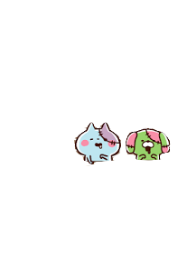

Kanahei is a illustrator and a cartoonist. Kanahei illustrates characters inn 2002, and the characters are called"Kanahei paintings". Kanahei drewed the most popular stickers on LINE. And Kanahei illustrates on books in Japan.There was a cafe about Kanahei, and it is called Kanahei no Yurutto cafe(Kanahei's relaxing cafe). There were many different cute foods andndrinks in the Kanahei cafe. Click =>Kanahei Cafe(=>map<=)<= to read more informations about Kanahei cafe.
Kanahei Homepage
Wikipedia Kanahei
Japan informations
Kanahei Cafe
Usagi |
Piske |
ne-ne-neko (ne-ne-kitten) |
The Boy and the Girl |
Zombie Kitten and Zombie Dog |
Ghost |